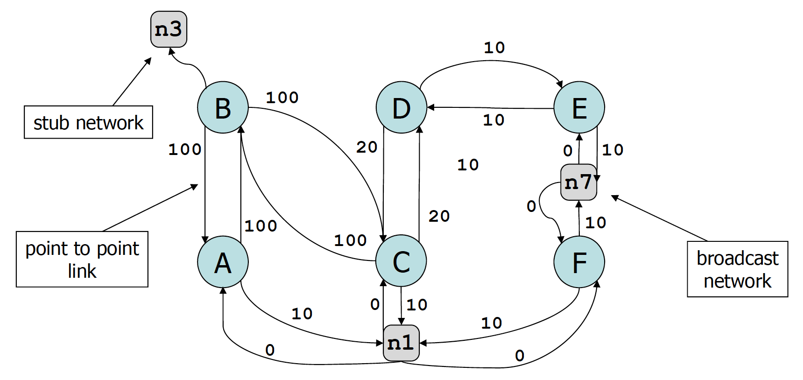

Routing = IP packet forwarding. This is done by routing tables, than can be set mantually (but error-prone) but should be done by a routing protocol which computes the routing tables in a number of routers.
Link State : all routers in a domain have a map of the entire domain (obtained by flooding). Every link has a cost dependant on its speed. The routes compute the next hop by computing shortest path based on the map. Used in one-domain OSPF, IS-IS and in advanced bridging methods (TRILL, SPB)
Distance Vector : all routers in a domain only know their neighbors + distance to all destinations. Routers inform neighbors of their own distance vectors using interior routing (RIP, EIGRP)
Path Vector : Every router knows only: its neighbours + paths to all destinations
used for exterior routing (between domains) – see BGP
Source Routing (Explicit Routes) : Paths are computed by the source host and put into packet headers. Routers simply lookup the next‐hop, contained in packet header.
OSPF = Open Shortest Path First
Every router has
Hello protocol is used to discover neighbouring routers – and to detect
failures.
When two routers become new neighbours they first synchronize their
link state databases (using LSA)
Link State Advertisement : describes a router’s attached nets + neighbors.
Oriented graph with edge cost = cost given in LSA (network node to router node = 0)

Router computes one or several shortest paths to every destination
from self. Paths computed at every node :
link state database is same at all routers, but every router performs
a different computation as it computes paths from self
synchronization of databases guarantees absence of persistent
loops
where the nodes are \(0\dots N\); The algorithm computes the shortest paths from node 0. \(c(i,j)\) is the cost from \(i\) to \(j\). \(V\) is the set of nodes visited so far. \(pred(i)\) is the estimated set of predecessors of node \(i\) along a shortest path. \(m(j)\) is the estimated distance from node 0 to \(j\).
The worst‐case complexity of this version is \(O(n^2)\) where \(n\) is the number of nodes. More efficient versions of the algorithm have a smaller complexity, \(O(n\cdot log(n)+E)\) where \(E\) is the number of links.
In the routing table there is the next hop and distance to every destination.

OSPF supports multiple shortest paths IP allows to have multiple next‐hops to the same destination in the routing table This is good as it allows to exploit the multiplicity of paths that exist in many networks.
e.g. when routers or links crash or are rebooted (failures are detected by OSPF’s HELLO protocol or by the BFD protocol). When a router sees a change in the state of a links or a neighbouring router, it sends a new LSA to all its neighbours. All routers update their link state database and propagate the change to the entire OSPF area.
Attacks against routing protocols
Link state floods all information to all routers, therefore does not scale to very large networks. OSPF uses a system of areas (i.e. a hierarchy of two routing levels) to scale to very large networks. A multi area OSPF domain has one backbone area (area 0) + several non backbone areas. All inter-area traffic goes through area 0.
All routers in area 0, including X3 and X5 compute their distances to networks outside the area (such as n1) using the Bellman‐Ford formula :
\(d(self, n_1) = \underset{BR\in Area 0}{min}\{d(self, BR)+d(BR, n_1)\}\) where BR is a border router.
The process can be used to compute not only the distance, but also the path. To n1, the min is for BR=X4, therefore the shortest path to n1 is via X4 and the next hop to n1 is the next hop to X4. X3 updates its routing table and adds entries to n1 (and n2).
Link state routing (OSPF or IS‐IS) provides a complete view of area to every node. This can be used to provide advanced functions:
Example : LS Bridging. Tunneling MAC packets in IP. Use LSR to discover which VLANs are active on their ports and put this information on in the link state database.
Some networks want more control; e.g. handle mission critical traffic with high priority; ban non‐HTTP traffic; send suspicious traffic to a machine that does deep packet inspection.
When a packet has to be forwarded, such a router does:
Same can be used in switches (per flow tables then complement the MAC forwarding table)
Manage the flow tables in a collection of routers/switches from a central application
OSPF (and routing protocols) automatically build connectivity and repair failures.
With link state routing:
More control can be obtained by an outside application (SDN). SDN is used today primarily with switches, but is starting to be used also for routers.